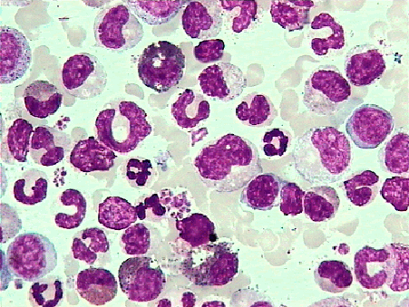

疾病科普 白血病的初步介绍

白血病（拉丁语：leukemia）是一群癌症种类的统称，英文名称来自于古希腊语，λευκός（leukos，白色）与αἷμα（haima，血液）的组合。 它通常发病于骨髓，造成不正常白血球的大量增生。 这些异常增加的白血球都尚未发育完成，称之为芽细胞或白血病细胞。 症状可能包含：出血与淤斑、疲倦以及感染风险增加。 这些症状会因缺乏正常血球而发生。
发病原因
白血病发生的真正原因尚未知晓，目前相信环境与遗传因素都扮演了重要角色。 风险因子包括：吸烟、游离辐射、部分化学物质如苯、曾接受化疗、唐氏综合症、家族史有白血病。 白血病可被分为：急性淋巴性白血病、急性骨髓性白血病、B细胞慢性淋巴性白血病与慢性骨髓性白血病这四大类型，以及其他较不常见的种类。 白血病与淋巴瘤同属影响血液、骨髓与淋巴系统的肿瘤当中的一种，此大类疾病被称为造血和淋巴组织肿瘤。 白血病的诊断方法主要靠血液检查与骨髓检查。
疗法
白血病的治疗方式包括化学疗法、放射线疗法、标靶治疗与骨髓移植。 某些类型的白血病会采用所谓“观察等待”的策略。
预后方面，发达国家比以前有明显进步，以美国为例，其五年存活率在2011年的统计数据为57%。 儿童的五年存活率一般比成人高，依据白血病的类型不同，大约在60到85%之间。 急性白血病病患若接受治疗痊愈且5年内没有复发的话，之后终身复发的机率相当低。 另外，白血病的治疗有可能需要配合输血或输血小板及疼痛管理。 安宁缓和治疗不论有没有进一步治疗以控制，都可能有帮助。